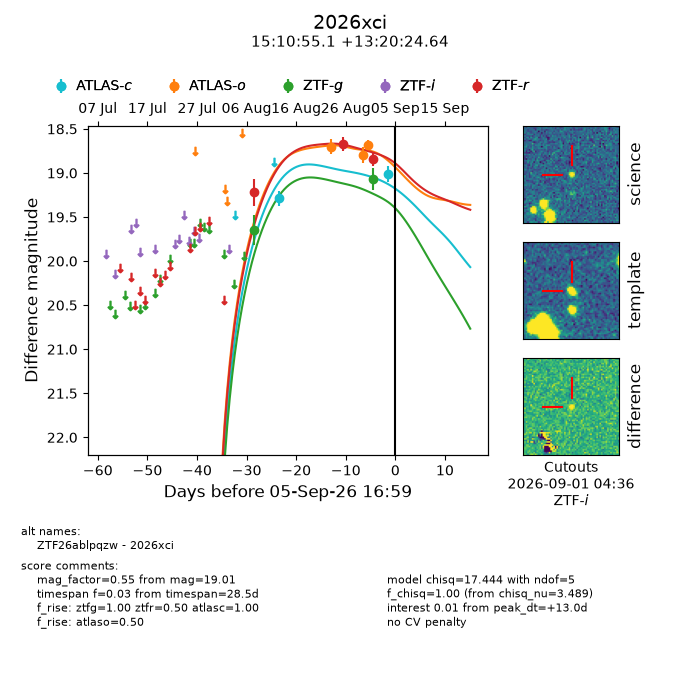
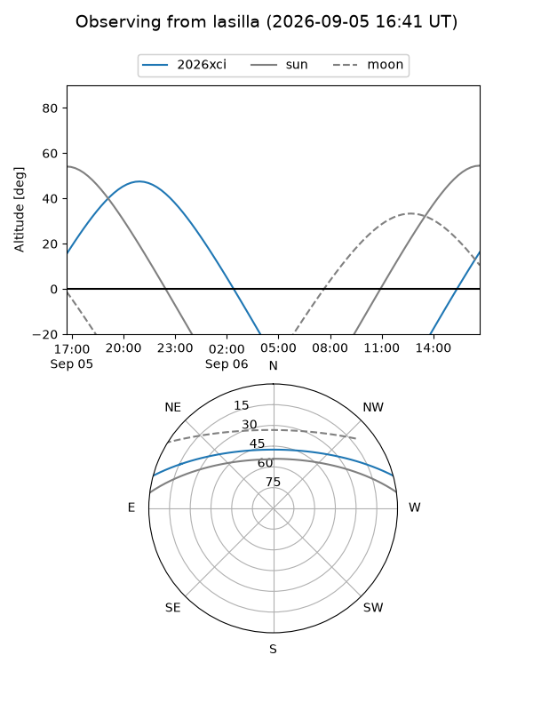
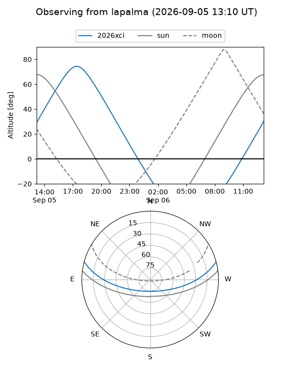
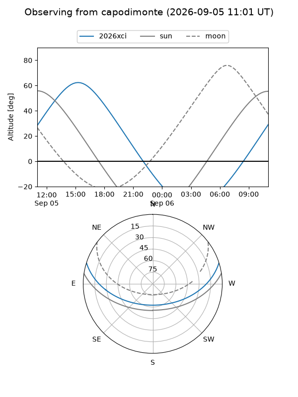
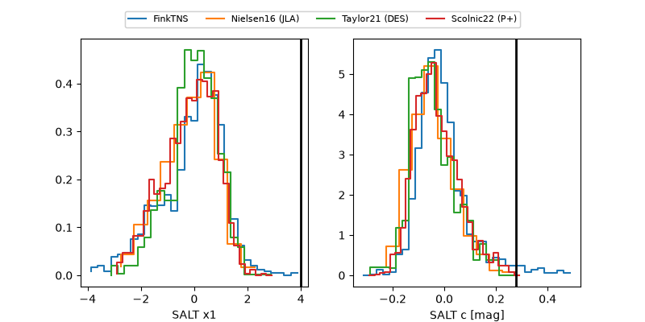

2026xci
Target 2026xci at 2026-09-06 04:56
Aliases and brokers:
FINK-ZTF: ztf.fink-portal.org/ZTF26ablpqzw
Lasair-ZTF: lasair-ztf.lsst.ac.uk/objects/ZTF26ablpqzw
ALeRCE-ZTF: alerce.online/object/ZTF26ablpqzw
YSE-PZ: ziggy.ucolick.org/yse/transient_detail/2026xci
TNS name: wis-tns.org/object/2026xci
Direct TNS query: direct search
alt names
ZTF26ablpqzw (ztf,fink_ztf)
2026xci (tns,yse)
Coordinates:
equatorial (ra, dec) = 227.7298,+13.34018
equatorial (HMS+DMS) = 15:10:55.15,+13:20:24.64
galactic (l, b) = (17.0126,+54.65632)
Flags:
TNS type: nan
peak dt: +13.5
Photometry:
last atlasc=19.01, atlaso=18.68, ztfg=19.07, ztfr=18.84
2 atlasc, 3 atlaso, 2 ztfg, 3 ztfr detections
Lightcurve

Visibility



Additional plots
